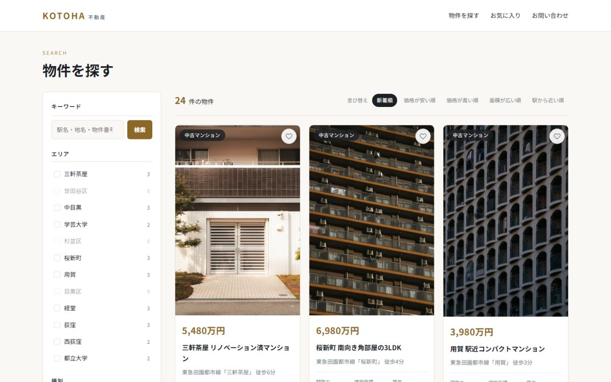
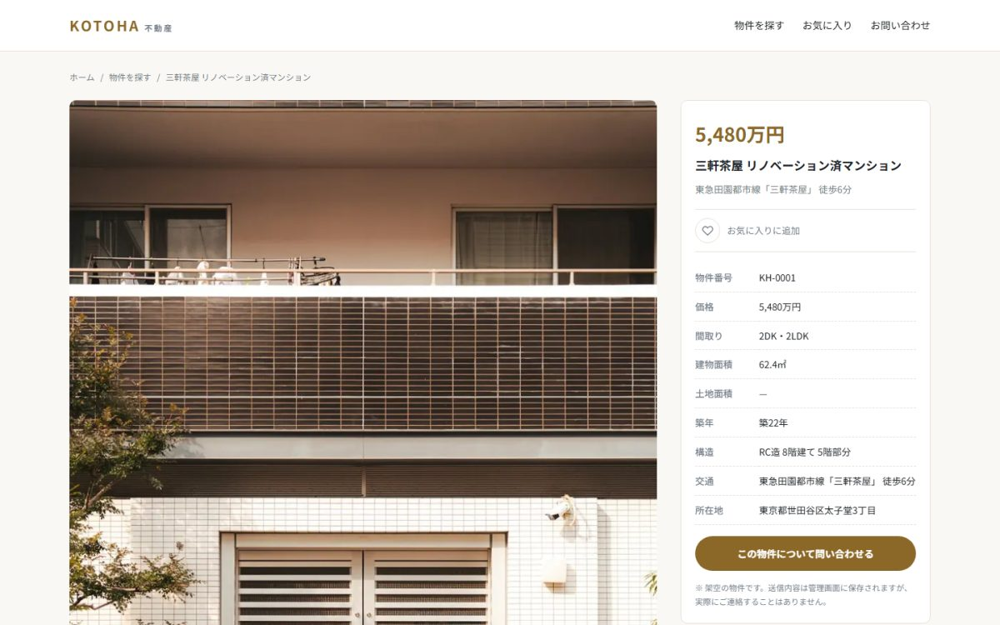

不動産（売買）／ ヘッドレスWordPress + Next.js
コトハ不動産
すでに作ってあったWordPressサイトの表示側だけを、Next.jsで作り直したものです。 管理画面はWordPressのまま、同じデータベースを見ています。


| 種別 | 不動産（売買）／既存WordPressサイトのフロントエンド刷新 |
|---|---|
| 担当範囲 | API設計・実装・デプロイ |
| 使用技術 | Next.js 16（App Router）／ React 19 ／ TypeScript ／ CSS Modules ／ WordPress REST API |
| 制作物 | Next.jsアプリ ／ WordPress側の配信用API（4エンドポイント） |
なぜ作り直したか
WordPressは編集画面が使いやすく、更新を依頼者自身で行えます。一方で表示のたびにPHPがデータベースを引いてHTMLを組み立てるため、待ち時間が積み上がります。
編集のしやすさは残したまま、表示だけ速くするというのがこの構成の狙いです。WordPressは管理画面とデータ置き場として使い、閲覧者が見る画面はNext.jsが作ります。
同じ条件で2〜3倍になりました
両方とも同じHerokuのリージョンに置き、同じデータベースを見た状態で9回計測した中央値です。
| ページ | WordPress版 | Next.js版 |
|---|---|---|
| トップ | 554ms | 187ms |
| 物件検索 | 554ms | 199ms |
| 物件詳細 | 383ms | 185ms |
差はレンダリング方式から来ています。物件詳細24件はビルド時にHTMLを作り終えており、閲覧者が来てから組み立てていません。5分ごとに裏で作り直すので、WordPressで編集した内容もそのまま反映されます。
なお検索ページはHTMLが47KBから67KBに増えています。絞り込みの選択肢をすべてリンクとして書き出しているためで、後述のJavaScript無しでも動く設計と引き換えです。
検索ロジックはWordPress側を再利用した
「グループ内はOR・グループ間はAND」という絞り込みの仕様を両方に実装すると、片方だけ直したときに検索結果がずれます。
WordPressに配信用のエンドポイントを追加し、既存の検索処理をそのまま呼ぶようにしました。価格を「5,480万円」と整形する処理も同じ理由でWordPress側に置いています。Next.js側は表示に専念し、業務の決まりごとは1か所にまとめるという分け方です。
JavaScriptが無効でも検索できる
絞り込みはチェックボックスではなくリンクで作っています。条件はURLに載るため、条件つきのURLをそのまま共有でき、ブラウザの戻る／進むも実装せずに成立します。この設計はWordPress版から引き継ぎました。
書き込みは共有シークレットで守る
お問い合わせの受信だけは書き込みが発生します。公開状態のまま誰でも送信できると、そのまま投稿を作られてしまうため、Next.jsのサーバー側だけが知る文字列をヘッダーで渡し、WordPress側で照合しています。設定が漏れている場合はエンドポイント自体を無効にします。動かないほうが、書き込み放題になるより安全だと判断しました。
つまずいた点：ビルドは通るのに、公開すると500になった
お問い合わせページだけがエラーになりました。原因は、Server Action（サーバー側で動く関数）のファイルに、フォームの初期状態を表す定数を一緒に置いていたことです。このファイルからエクスポートできるのは非同期関数だけで、定数は実行時に空になります。型チェックもビルドも通るため、公開して初めて分かりました。
定数を別ファイルに移して解決しています。「ビルドが通ること」と「動くこと」は別物で、本番と同じ形で一度動かすまで確認は終わらないと学びました。
つまずいた点：絞り込みの件数が全部0だった
選択肢の横に出る件数がすべて0になっていました。件数を集計する既存の処理は「スラッグ」をキーに結果を返すのに、こちらは数値のIDで取り出そうとしていたためです。
既存のWordPress版には影響しない、API追加時に自分で持ち込んだ不具合でした。既存コードを再利用するときは、呼び出し方だけでなく戻り値の形まで確認する必要がありました。
この構成が向く場面・向かない場面
更新頻度が高く、編集者がWordPressに慣れている案件には向きます。一方で、サーバーが2つになるぶん運用先が増え、費用も構成も複雑になります。ページ数が少なく更新も稀なサイトであれば、WordPress単体のままが適切だと考えています。